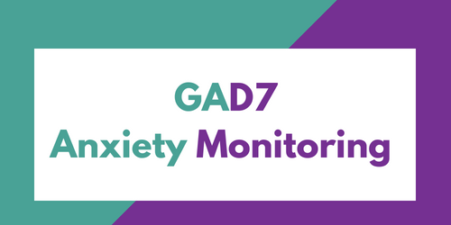

Bài đánh giá Trầm cảm - Lo âu - Stress (DASS-21)
DASS-21 (Depression Anxiety and Stress Scales) là thang đánh giá được phát triển bởi các nhà khoa học thuộc
Đại học New South Wales (University of New South Wales), Australia.
DASS-21 có thể được dùng trong tầm soát và đánh giá mức độ trầm cảm, lo âu và stress.
DASS-21 là thang tự đánh giá gồm 21 mục, có thể đánh giá được cả trầm cảm, lo âu và stress.
Bài đánh giá trầm cảm thanh thiếu niên (RADS 10-20)
Thang đánh giá trầm cảm thanh thiếu niên (Reynolds Adolescent Depression Scale, RADS 10-20)
là thang tự đánh giá nhằm xác định tình trạng trầm cảm ở thanh thiếu niên do William M. Reynolds xây dựng năm 1986.
Thang RADS đã được Việt hóa bởi các bác sỹ tại Viện Sức khỏe tâm thần Quốc gia và đưa vào sử dụng tại viện từ năm 1995.
RADS là thang tự đánh giá ngắn gọn gồm 30 đề mục để đánh giá mức độ hiện thời của các triệu chứng trầm cảm ở thanh thiếu niên.
RADS được sử dụng ở cả trong trường học và các cơ sở lâm sàng, nó phù hợp cho thanh thiếu niên trong độ tuổi từ 10 đến 20.
Bài đánh giá Trầm cảm - Lo âu - Stress (DASS-42)
DASS-42 (Depression Anxiety and Stress Scales) là thang đánh giá được phát triển bởi các nhà khoa học thuộc
Đại học New South Wales (University of New South Wales), Australia.
DASS-42 có thể được dùng trong tầm soát và đánh giá mức độ trầm cảm, lo âu và stress.
DASS-42 là thang tự đánh giá gồm 42 mục, có thể đánh giá được cả trầm cảm, lo âu và stress.
Bài đánh giá trầm cảm (PHQ-9)
Trầm cảm là một rối loạn tâm thần thường gặp. Theo Tổ chức Y tế thế giới, trên toàn cầu có hơn 300 triệu người thuộc đủ các lứa tuổi mắc trầm cảm. Trầm cảm là nguyên nhân hàng đầu dẫn đến mất chức năng, và nhân tố chính góp phần vào gánh nặng bệnh tật toàn cầu.
Tuy nhiên, hiện nay đã có những phương pháp điều trị hóa dược và tâm lý có hiệu quả đối với trầm cảm. Phát hiện bệnh và điều trị càng sớm, hiệu quả càng cao.
PHQ-9 (Patient Health Questionnaire-9) là một thang có giá trị trong việc tầm soát và theo dõi triệu chứng trầm cảm.
Bài đánh giá trầm cảm (Beck - BDI)
Trầm cảm là một rối loạn tâm thần thường gặp. Theo Tổ chức Y tế thế giới, trên toàn cầu có hơn 300 triệu người thuộc đủ các lứa tuổi mắc trầm cảm.
Trầm cảm là nguyên nhân hàng đầu dẫn đến mất chức năng, và nhân tố chính góp phần vào gánh nặng bệnh tật toàn cầu.
Tuy nhiên, hiện nay đã có những phương pháp điều trị hóa dược và tâm lý có hiệu quả đối với trầm cảm. Phát hiện bệnh và điều trị càng sớm, hiệu quả càng cao.
Thang đánh giá trầm cảm Beck (BDI) được tạo ra bởi Aaron T.Beck. Đây là một thang tự đánh giá gồm 21 câu hỏi và là một trong những trắc nghiệm tâm lý được sử dụng rộng rãi nhất được sử dụng để đo mức độ nghiêm trọng của chứng rối loạn trầm cảm.

Bài đánh giá lo âu GAD-7
Rối loạn lo âu là một nhóm các rối loạn tâm thần thường gặp, gây nhiều ảnh hưởng đến cuộc sống người bệnh. Phát hiện sớm giúp điều trị có hiệu quả hơn các rối loạn lo âu. Và đó là lý do thang đánh giá lo âu GAD-7 ra đời.
GAD-7 (General Anxiety Disorder-7) là thang đánh giá ngắn gọn với 7 câu hỏi, có giá trị trong tầm soát và theo dõi các rối loạn lo âu.
Thang đo GAD-7 là thang đánh giá lo âu của Spitzer và cộng sự được Nhóm nghiên cứu của bệnh viện Tâm thần Đà Nẵng dịch, hiệu đính, chuẩn hóa. GAD-7 dựa trên các tiêu chí chẩn đoán được mô tả trong DSM-IV.